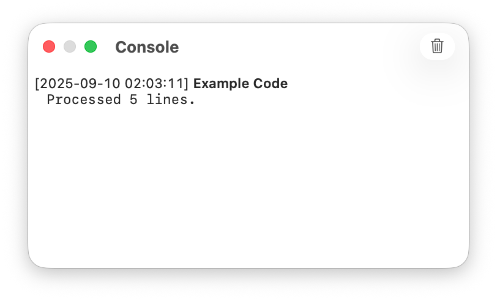

From CotEditor’s Script menu, you can run UNIX scripts that receive information and text from the document you’re editing and send their output back into CotEditor.
Create a script file in CotEditor’s scripts folder. You can write UNIX scripts for CotEditor in any scripting language, as long as the execution environment is available on your Mac. However, script files must have one of the following file extensions: .sh, .pl, .php, .rb, .py, .js, .awk, or .swift.
The script file must be executable. You can make a file executable in Terminal on Mac.
For details about opening the scripts folder and adding or removing scripts, see Automate tasks with scripting.
Specify the interpreter for a UNIX script with a #! (shebang) line at the beginning of the file. A shebang such as #!/usr/bin/env python3 runs the script with the Python 3 interpreter found using PATH.
Note: When using /usr/bin/env in a shebang, CotEditor uses the PATH environment variable available when it runs the script to find the interpreter. This PATH can differ from the one your shell uses in Terminal. If your script requires a specific version of Python or another interpreter, specify its absolute path, such as #!/path/to/python3.
If the current document has been saved, its absolute file path is passed to the script as the first command-line argument, such as $1 in a shell script or sys.argv[1] in Python.
A script can receive the content of the current document through standard input (STDIN). To specify what CotEditor passes to your script, add a comment at the top of the script that contains “%%%{CotEditorXInput=xxxx}%%%”. Replace “xxxx” with one of the values below. If you don’t specify a value, CotEditor passes no data. This is the same as using “None.”
For “xxxx,” you can specify one of the following input sources:
| Keyword | Description |
|---|---|
Selection | Pass the currently selected text. |
CurrentLine | The text on the line containing the insertion point. |
AllText | Pass the entire content of the document. |
None | Pass nothing (default). |
Text passed from CotEditor to a script is always encoded in UTF-8, regardless of the document’s text encoding.
CotEditor can receive output from the script through standard output (STDOUT) and apply it within the app. To define how CotEditor handles the output, add a comment at the top of the script that contains “%%%{CotEditorXOutput=xxxx}%%%”. Replace xxxx with one of the values below. If you don’t specify a value, CotEditor performs no action. This is the same as using “Discard.”
For “xxxx,” you can specify one of the following output targets:
| Keyword | Description |
|---|---|
ReplaceSelection | Replace the current selection with the output text. |
ReplaceCurrentLine | Replace the entire line containing the insertion point with the output. |
ReplaceAllText | Replace the entire content of the document with the output text. |
InsertAfterSelection | Insert the output text immediately after the current selection. |
AppendToAllText | Insert the output text at the end of the document. |
NewDocument | Create a new document and insert the output text into it. |
Pasteboard | Place the output text on the Clipboard. |
Discard | Do nothing (default). |
Text returned from a script to CotEditor must also be encoded in UTF-8, regardless of the document’s text encoding.
Any text written to standard error (STDERR) appears in the Console window.
For example, the following Python script adds a “>” character to the beginning of each selected line in the current document and prints the number of processed lines to the Console.
#!/usr/bin/env python3
# %%%{CotEditorXInput=Selection}%%%
# %%%{CotEditorXOutput=ReplaceSelection}%%%
import sys
count = 0
for line in sys.stdin:
count += 1
print(">" + line.rstrip())
sys.stderr.write("Processed {} lines.".format(count))
The following message appears in the Console when you run the script from CotEditor’s Script menu:
